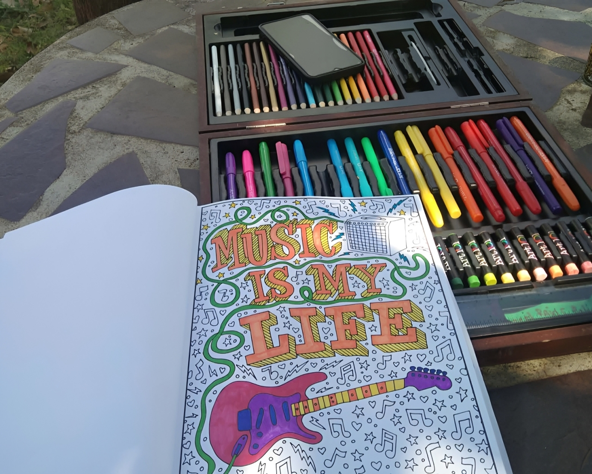
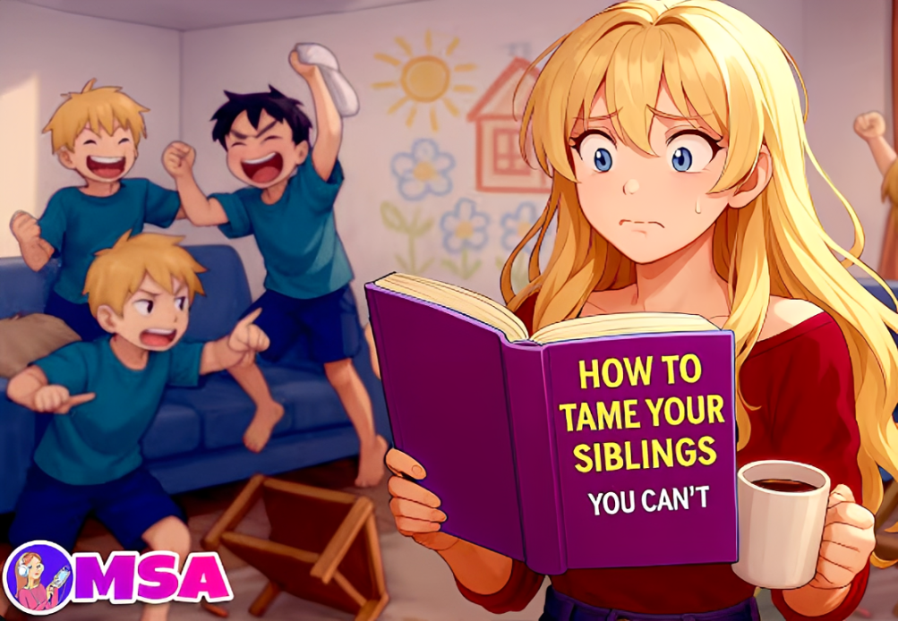
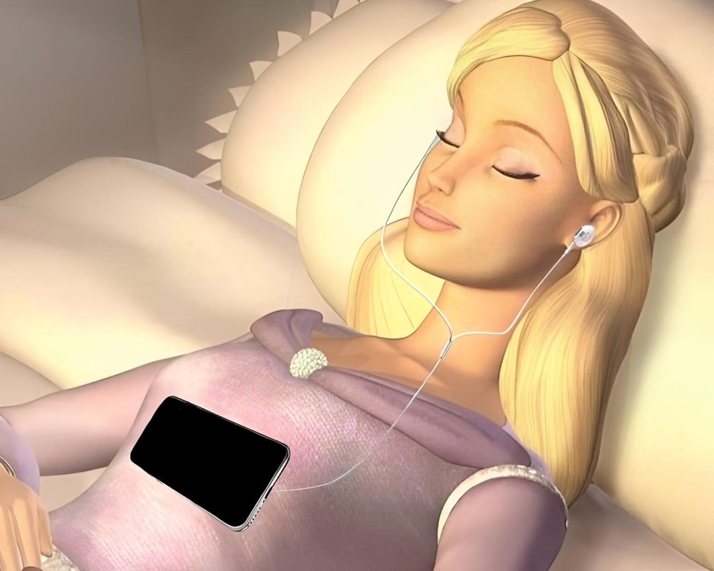
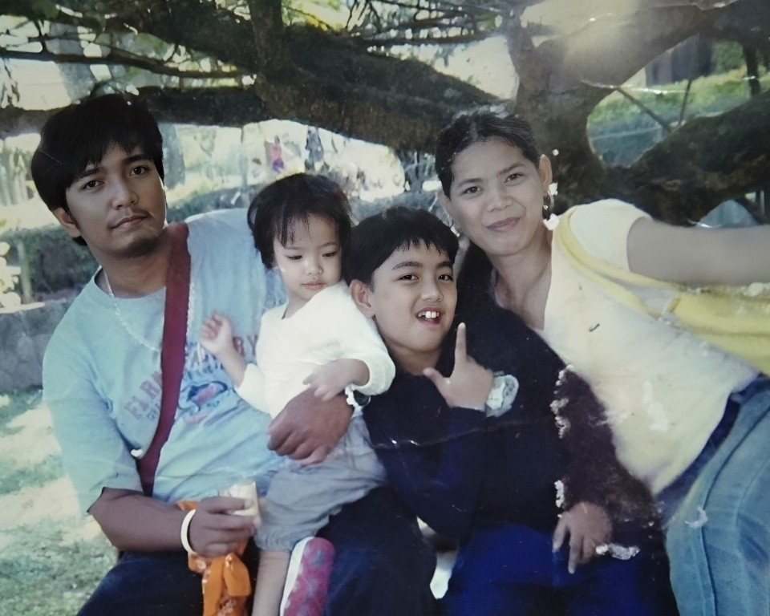
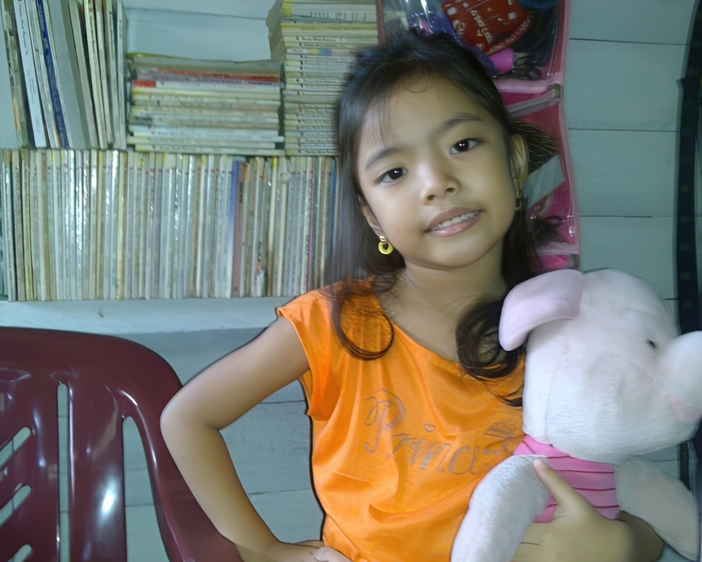
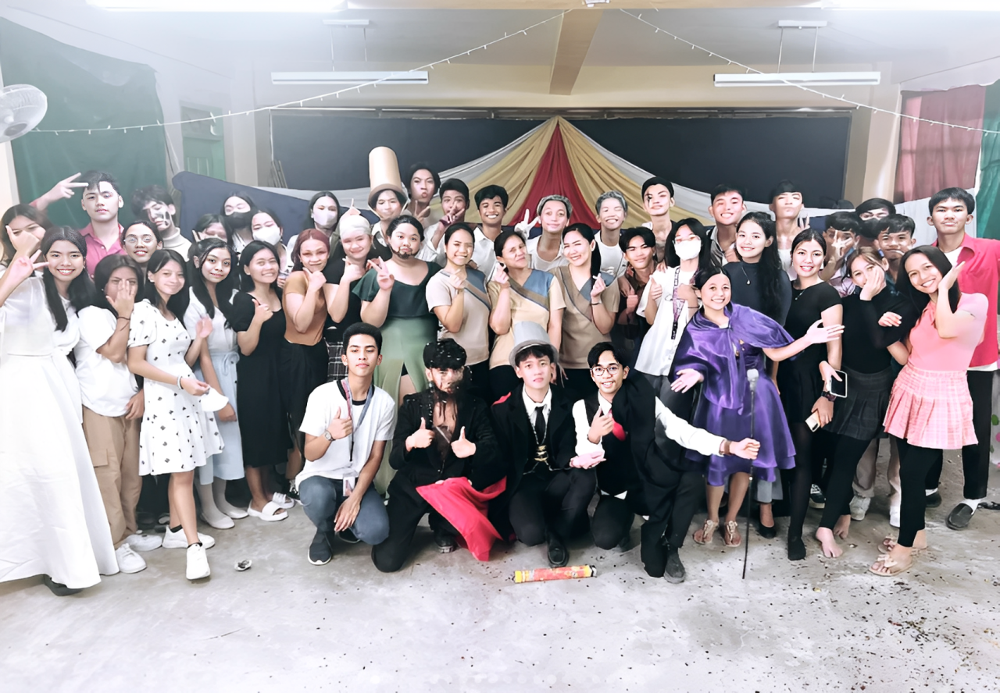
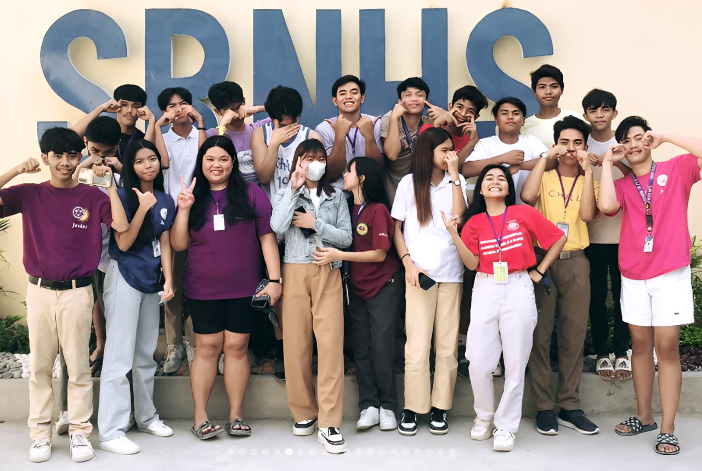
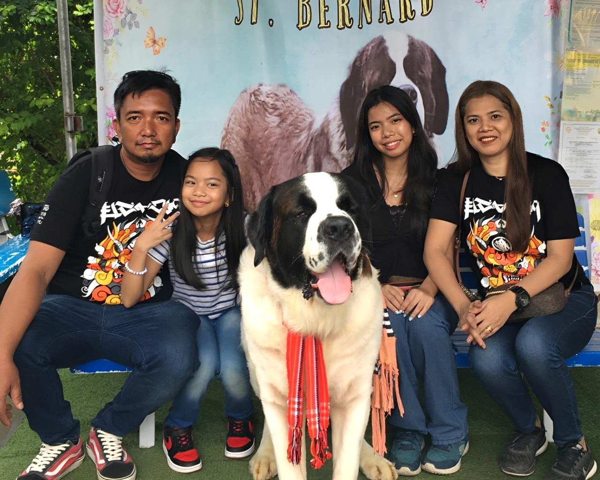
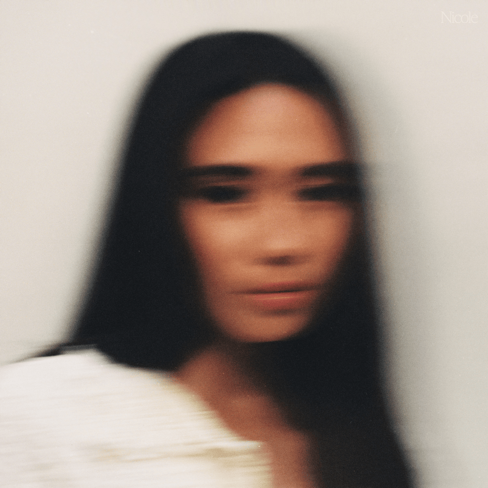
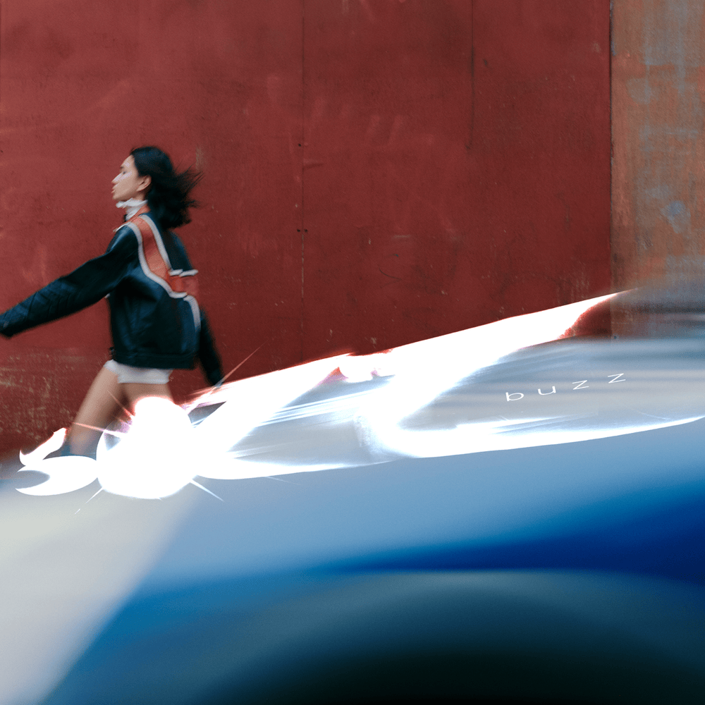

My Hobbies

Coloring
When life feels too overwhelming, I usually turn to coloring. It helps me slow down and just breathe for a bit. I don't really think too much, I just focus on the colors, and somehow everything feels lighter afterward.

Watching
I used to spend a lot of my free time watching MSA stories on YouTube. I'd tell myself "just one more episode," and then suddenly hours had passed. I think it's because the stories are so dramatic and easy to get into, plus the animations make it fun to watch.

Listening to music
I listen to music almost all the time, especially when I want to relax or when I'm in a certain mood. Sometimes I make playlists depending on how I feel, and it kind of feels like I'm putting my thoughts into songs instead of words.
Coloring
When life feels too overwhelming, I usually turn to coloring. It helps me slow down and just breathe for a bit. I don't really think too much, I just focus on the colors, and somehow everything feels lighter afterward.
Watching
I used to spend a lot of my free time watching MSA stories on YouTube. I'd tell myself "just one more episode," and then suddenly hours had passed. I think it's because the stories are so dramatic and easy to get into, plus the animations make it fun to watch.
Listening to music
I listen to music almost all the time, especially when I want to relax or when I'm in a certain mood. Sometimes I make playlists depending on how I feel, and it kind of feels like I'm putting my thoughts into songs instead of words.
My Photos

Family Trip in Baguio
This picture was taken during a family trip to Baguio when I was younger. It was just the four of us, my dad, mom, kuya, and me, since my little sister wasn't born yet. I don’t remember every detail clearly, but I do remember how happy and simple everything felt back then. Looking at it now makes me really miss those moments.

My Favorite Stuffed Toy
This is my stuffed toy Piglet from Winnie the Pooh given to me by my dad back in 2011. It used to be something I held onto for comfort growing up. I lost it when our house burned down, and even now, I still wish I had it with me.

Theater in SHS with classmates
One of my favorite memories from senior high school was performing in The Greatest Showman theater. I played the role Jenny Lind, and even though I was nervous at first, performing with my classmates felt amazing. It wasn’t just about the outcome, it was the laughs backstage, the teamwork, and the thrill of stepping into someone else’s story for a while.

Memories with Friends
This photo reminds me of my high school days with my friends. We went through a lot together. The stress, deadlines, and random moments, but somehow we still found ways to laugh through everything.

Baguio Trip Again with Family
We went back to Baguio in 2024, and this time my little sister came along! Kuya couldn’t join because of seminary school. It felt different from our first trip, but just as special. Seeing everyone together, laughing and exploring the place, made me appreciate these moments with my family even more.
Family Trip in Baguio
This picture was taken during a family trip to Baguio when I was younger. It was just the four of us, my dad, mom, kuya, and me, since my little sister wasn't born yet. I don’t remember every detail clearly, but I do remember how happy and simple everything felt back then. Looking at it now makes me really miss those moments.
My Favorite Stuffed Toy
This is my stuffed toy Piglet from Winnie the Pooh given to me by my dad back in 2011. It used to be something I held onto for comfort growing up. I lost it when our house burned down, and even now, I still wish I had it with me.
Theater in SHS with classmates
One of my favorite memories from senior high school was performing in The Greatest Showman theater. I played the role Jenny Lind, and even though I was nervous at first, performing with my classmates felt amazing. It wasn’t just about the outcome, it was the laughs backstage, the teamwork, and the thrill of stepping into someone else’s story for a while.
Memories with Friends
This photo reminds me of my high school days with my friends. We went through a lot together. The stress, deadlines, and random moments, but somehow we still found ways to laugh through everything.
Baguio Trip Again with Family
We went back to Baguio in 2024, and this time my little sister came along! Kuya couldn’t join because of seminary school. It felt different from our first trip, but just as special. Seeing everyone together, laughing and exploring the place, made me appreciate these moments with my family even more.
My Favorite Songs

Backburner
